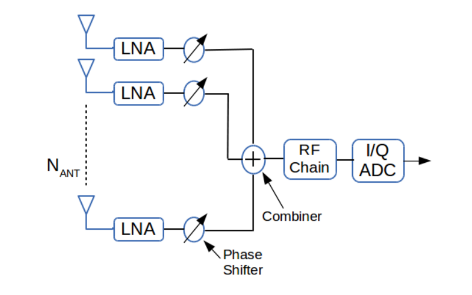
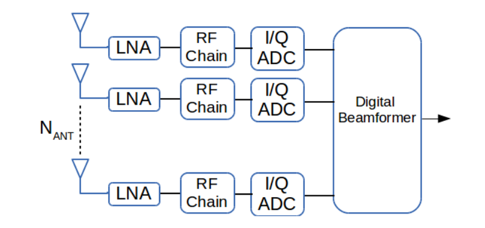
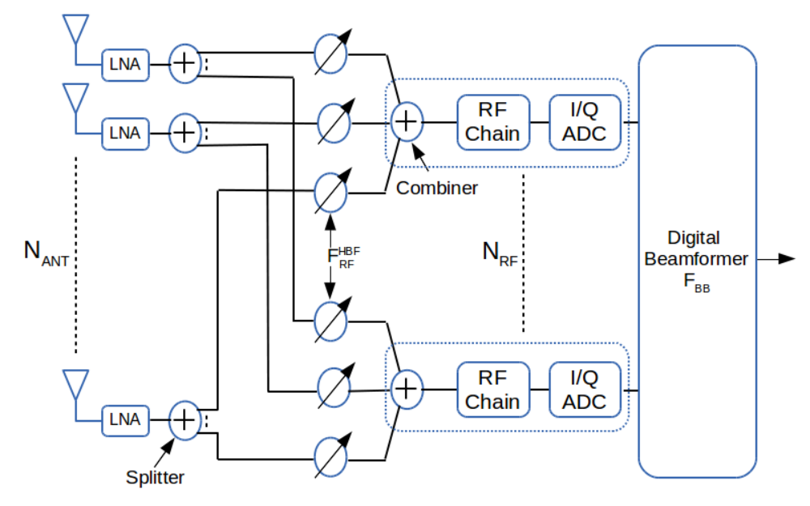

In this work, we study the capacity and energy efficiency of Analog, Hybrid and Digital Combining (AC, HC and DC) for millimeter wave (mmW) receivers. Our comparison extends previous work by taking into account the power consumption of all components of the receiver, not just Analog-Digital Converters (ADC), by considering the practical limitations of beamforming in each architecture, and by developing a performance chart representation that enables comparison of different architectures at a glance.
Ref: Waqas bin Abbas, Felipe Gomez-Cuba, Michele Zorzi; "Millimeter Wave Receiver Efficiency: A Comprehensive Comparison of Beamforming Schemes with Low Resolution ADCs" http://arxiv.org/abs/1607.03725 Submitted to IEEE Transactions on Wireless Communications.
The mmW channel matrix is randomly distributed following a random geometry with a small number of propagation paths (order of tens) grouped in very few clusters of similar paths (average $1.9$)[4,27] \begin{equation} \textbf{H} = \sqrt{\dfrac{N_{t}N_{r}}{\rho N_cN_p}}\sum_{k=1}^{N_c}\sum_{\ell=1}^{N_p}g_{k,\ell}\textbf{a}_{r}(\phi_{k}+\Delta\phi_{k,\ell}) \textbf{a}_{t}^H(\theta_k+\Delta\theta_{k,\ell}) \end{equation} where $\rho$ is the distance dependent path-loss, $N_c$ is the number of independent clusters, $N_p$ represents the number of paths per cluster, $g_{k,\ell}\sim \mathcal{CN}(0,1)$ is the small scale fading associated with the $\ell^{th}$ path of the $k^{th}$ cluster, $\phi_k$ and $\theta_k$ $\in [0,2\pi)$ represent the mean angle of arrival (AoA) and angle of departure (AoD) of the $k^{th}$ cluster at the receiver and at the transmitter, respectively. The AoA and AoD of each path within each cluster vary around the mean direction of that cluster, with a standard deviation $\theta_{RMS}$. We represent by $\Delta\phi_{k,\ell}$ and $\Delta\theta_{k,\ell}$ $\sim \mathcal{N}(0,\theta_{RMS}^2)$ the differential AoA and AoD of the $\ell^{th}$ path of the $k^{th}$ cluster. Here, we model the antenna arrays at both the transmitter and the receiver as uniform linear arrays (ULA) with adjacent antenna spacing of half the wavelength of the transmitted signal ($\lambda/2$). Under this model, a spatial signature vector $\textbf{a}_{t}$ for the transmit array can be expressed as a function of the AoD as follows \begin{equation} \textbf{a}_{t} = \dfrac{1}{\sqrt{N_{t}}}[1, e^{j{\pi}\sin (\theta)}, ... , e^{j(N_{t} - 1){\pi}\sin (\theta)}]^T \end{equation} where $T$ represents the transpose. Likewise, an analogous expression characterizes the spatial signature vector for the receiver, $\textbf{a}_{r}$. Finally, for a 28 GHz channel, the path-loss is computed with [28] $$\rho_{LOS} (dB)=61.5+20\log_{10} (d)+\xi,\; \xi\sim\mathcal{N}(0,5.8),$$ $$\rho_{NLOS} (dB)=72+29.2\log_{10} (d)+\xi,\; \xi\sim\mathcal{N}(0,8.7),$$ where $d$ represents the distance between the transmitter and the receiver on a straight line while the variation of distances traversed by different paths is captured in $g_{k,\ell}$. The parameters suggested to model mmW 28 GHz channels in the literature [28] are $N_p=20$, $N_c\sim\max\{Poisson(1.8),1\}$ and $\theta_{RMS}\sim 10^o$. In our simulations, however, we set specific non-random values for $N_c$ to study the effect of the rank of the channel matrix $\mathbf{H}$ in the performance of receiver architectures. We consider a rank-1 channel with $N_c=N_p=1$; a low-rank channel with $N_c=1$ and $N_p=10$, where $\mathbf{H}$ typically has $4-5$ dominant eigenvalues; and a not-so-low rank channel $N_c=2$, $N_p=10$ where $\mathbf{H}$ typically has $8-10$ dominant eigenvalues.

Analog Combining is motivated by the fact that typically ADCs are the most power-hungry receiver component. Therefore, in this architecture all multiple-antenna processing is performed in the analog domain to minimize power consumption. The architecture in Figure 1 features one phase-shifter per receive antenna and an analog signal adder; together, these devices implement analog beamforming and deliver a scalar combined signal to a one-dimensional RF and ADC chain.

Digital Combining, which is motivated by the fact that digital MIMO processing has in general fewer constraints and can achieve higher gains. Therefore, in this architecture all multiple-antenna processing is performed in the digital domain to maximize the rate. The architecture in Figure 2 features no analog processing; each antenna directly delivers its received signal to a dedicated RF and ADC chain.

Hybrid Combining, which is motivated by the high capacity and the low power consumption of Digital and Analog combining architectures, respectively, and tries to strike a balance between the two. Therefore, this architecture has both analog and digital multiple-antenna processing. The architecture in Figure 3 features an analog processing stage with multiple banks of phase-shifters, each with an independent analog adder, RF and ADC chain.